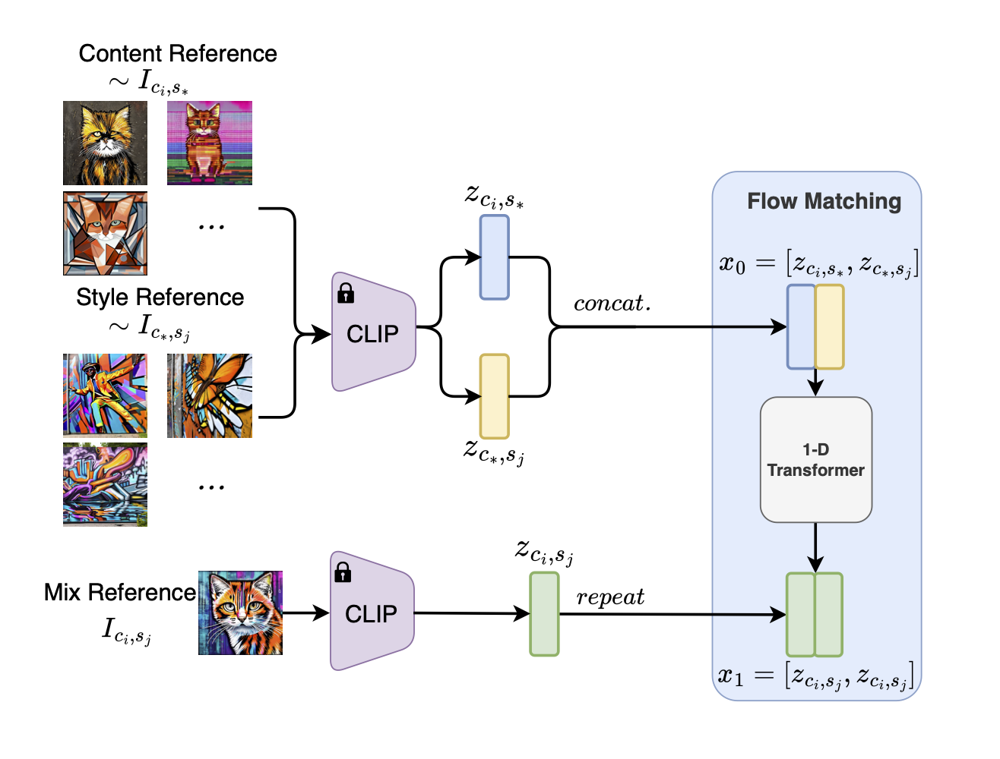

TL;DR: We introduce SCFlow (top), a bidirectional model that enables
both style-content mixing and disentangling within a single framework.
Additionally, we curate a large-scale dataset (bottom) to facilitate effective learning and evaluation.
Our approach generalizes well across diverse styles and contents, supporting both representation learning and controllable generation tasks.
Overview
Disentangling style and content is fundamentally challenging due to their inherent ambiguity, while existing generative
and discriminative models mainly impose explicit separation criteria, which struggles with the ambiguity of defining where the boundary lies between
style and content.
To circumvent its challenges, instead of tackling disentanglement directly, we propose SCFlow to implicitly learn disentanglement
by training only for merging style/content in an invertible manner with flow matching.
Thanks to the invertible nature of flow models, we can perform both forward and reverse inference,
enabling us to mix and disentangle style and content representations with a single model.
Training requires aligned style-content pairs, which existing datasets lack. Hence, we address this with a synthetic dataset
of 510,000 samples (51 styles and 10k content instances), ensuring full combinatorial coverage to observe independent style/content variations.
SCFlow infers disentangled representations implicitly, demonstrating zero-shot generalization on benchmarks like ImageNet and WikiArt. Code and data will be released.
Method

Training: We train our model to extract and merge the corresponding style and content.Bidirectional Inference: Once trained, the model can perform inference from both directions, merging (forward)
or disentangling (reverse) style and content.
Results
Qualitative Analysis
In the following, we present qualitative results of our method for both forward (mix contents and styes)
and reverse inference (disentangle contents and styles from a single sample). The inference is performed in the latent space of CLIP and
"decoded" back to the image space using unCLIP.
Forward inference visualization (zoom in for details) Reverse inference visualization
Disentanglement of Style and Content Representations
Our method offers a more structured embedding space compared to CLIP (visualized through t-SNE plots). In our embedding space, instances of the same class
form compact clusters, while different classes are clearly separated. Unlike CLIP more dispersed representation, our embeddings naturally organize similar styles
and contents closer together. We show the t-SNE plots of CLIP and our embeddings for content (top), style (mid) and their mixutre (bottom).
Smooth Interpolation in Pure Latent Spaces
Our model enables smooth and semantically meaningful transitions when interpolating between content and style embeddings obtained from the reverse process. Unlike the original CLIP,
which produces both abrupt changes and convoluted samples, our disentangled representations showcase gradual shifts, as seen in both content (e.g., forest to cityscape, with sample 3 being a nice mixture of both) and style
(e.g., cubism to drip painting) transitions. The concept of content or style is also cleaner than the original CLIP, where the content and style are mixed in a single
embedding (Cartoon style dog and horse; drip paiting depicting a roes).
Visualization of interpolated intermediate data points given pairs of concept (left and right most).
We also measure 1) left-hand side table: cosine similarity between the vectors formed by both ends, namely the vectors formed by image latents and text
latent. This should tell us how well does the the interpolation along those trajectories align with the one formed by text. 2) right-hand side: CLIP score between
the intermediate points to the given textual embedding (e.g., "dog", "horse", "drip paiting"). These quantitative evaluations further confirm our previous finding: our interpolations
align more consistently with text embeddings, and CLIP scores show a steady semantic transition, whereas CLIP fluctuates unpredictably, e.g., for the first dog-horse pair,
the cosine similarity to dog goes first up and constently down; Similarly, for the 2nd pair (forest-city), a similar pattern can be observed for the similarity to city.
These results highlight the improved smoothness and interpretability of our pure latent space.
Quantitative Evaluation of Latent Representations
Our model achieves the highest NMI scores for both style and content, exceeding the original CLIP embeddings by a large margin.
A similar observation can be seen from the FDR, Fisher Discriminant Ratio: $\text{FDR}=\frac{\sigma_{\text{inter}}^2}{\sigma_{\text{intra}}^2}$, calculated using both
inter- and intra-class variance of the embeddings. A higher value of FDR indicates better class separability. Our model achieves the highest FDR, demonstrating better class
separability by forming more distinct clusters for both styles and contents.
Our method effectively balances both content classification and style retrieval, demonstrating strong generalization to unseen data without explicit disentanglement training.
Unlike existing methods that fine-tune embeddings at the cost of content generalization, our model preserves content quality while achieving robust style separation.
Furthermore, our experiments on unseen styles confirm its ability to extract and manipulate new style-content representations, showcasing its versatility.